First of all thank you very much for purchasing @@name. We've put a lot of hard work into it, and we hope you love it as much as we do. This document covers the installation, set up, and use of this theme, and provides answers and solutions to common problems. We encourage you to first read this document thoroughly if you are experiencing any difficulties before contacting our support team.
@@name
We love to hear your feedback - if you find any bugs or have suggestions for improvements please get in touch. Nearly all of the time we follow your advice and issue a rapid update for @@name.
@@name has many more customization options including typographic selectors, stylistic color pickers and other add-ons. And in addition to these fantastic features, you'll also receive dashboard one-click updates and access to world-class theme support by our team of in-house professional WordPress developers.
If you like our work, please rate it. If you’re about to rate it with less than 5 stars, please let us know the reason first and we will do our best to improve the theme. Thank you so much!
WordPress Information
Since WordPress is constantly being updated information about how to install WordPress may become out of date, so you always can read official guide here.
Below are all the useful links for WordPress information:
WordPress Upload
To upload through your Dashboard, select “Appearance” and then “Themes”. Next, select the “Install Themes” tab at the top of the page and then select the “Upload” link, right above the search field. Choose your file and select “Install Now”. Once the theme is fully uploaded and installed, click “Activate” to activate the WordPress theme.
The theme files will be stored on your server in the wp-content/themes location.
When uploading your theme with the installer, please ensure you are uploading the theme .zip file, not the entire package you downloaded. In this case, you will be uploading @@slug.zip.
FTP Upload
To manually upload your new WordPress theme, login with your credentials to your website and locate the wp-content folder in your WordPress install files. Upload the un-zipped @@name folder into the: wp-content/themes folder.
Once uploaded, activate the theme by heading to the “Themes” menu in the WordPress Dashboard. Locate the @@name theme and hit “Activate”.
Theme Support
If you have a problem with the theme or found a bug, please let us know via our official Help Center. We take pride in our customer support and we will do what we can to assist you. If you are experiencing a theme issue, please first turn off all third party plugins to see if the problem persists.
With @@name you have the possibility to import any of the demos with just ONE click.
Setup Wizard
Once your theme has been activated, you will see the next window. Just follow the steps of the setup wizard.
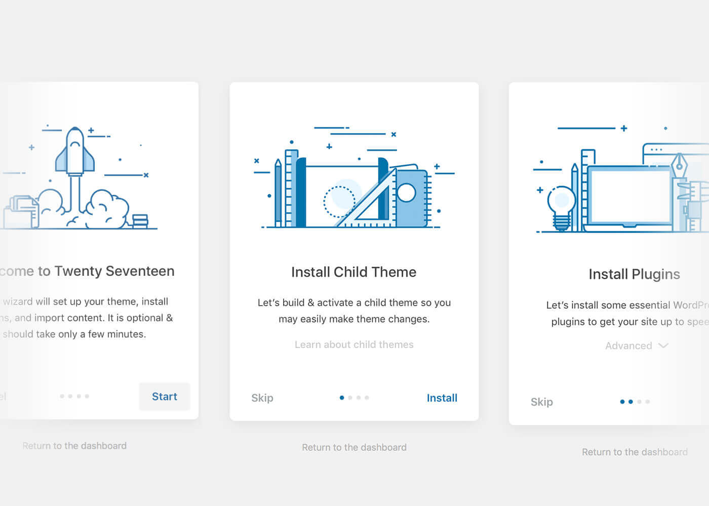
Manual Mode
- Go to
Plugins → Add New
- Search for
One Click Demo Import and install the plugin
- Activate
One Click Demo Import from your Plugins page
- Once the plugin is activated you will find the actual import page in: Appearance -> Import Demo Data
- Find the
Demo Content folder, which included with the theme package, and choose all right files in the next window. Click Import Demo Data
You now just need to wait for the importer to finish. This might take a few minutes depending on your hosting server speed.
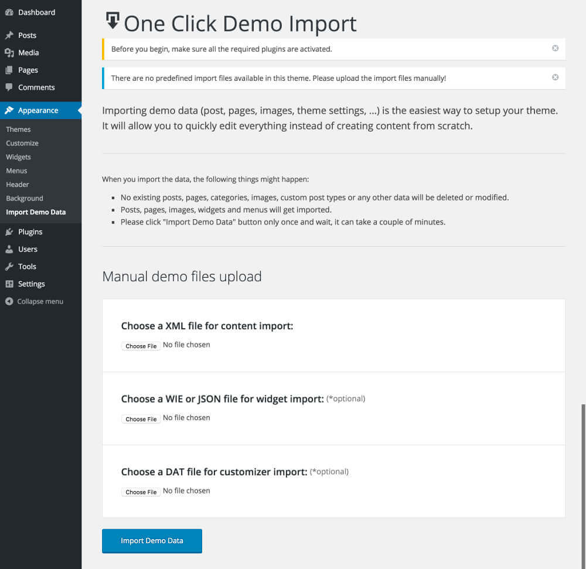
Import Issues
Successfully importing data into WordPress is not something we can guaranty for all users. There are a lot of variables that come into play, over which we have no control. For example, one of the main issues are bad shared hosting servers.
Demo Import problems→
- Go to
Appearance → Customize → Homepage Settings
- Under
Your homepage displays choose A static page
- Click on the
Homepage dropdown list and select the Home page you created as your static homepage
- Click on the
Posts page page dropdown list and select the Posts page you created
By default, WordPress uses URLs like this http://example.com/?p=123. This URL structure is not SEO friendly. This is why most WordPress site owners use Pretty Permalinks, which is a term used for SEO friendly URLs in WordPress. These SEO friendly Permalinks contain post, category, tag, title in the URL, allowing you to use Keywords inside your URLs.
To set up Permalinks on your WordPress site, simply go to Settings → Permalinks. There you will see a number of options to choose from:
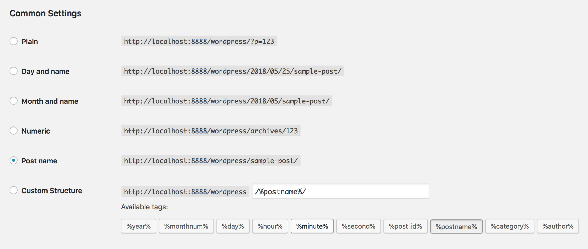
So, if you have not done so already, it`s highly advisable to update your permalink settings. Select any option other than default. We recommended postname - as you can see allow.
- Go to
Appearance → Menus
- Give your menu a name and click to
Create Menu button
- Add few simple links from
Links tab
- Save your menu
- Navigate to
Manage Locations tab (at the top of the screen)
- Choose your new menu as
Main Navigation
- Click
Save Menu
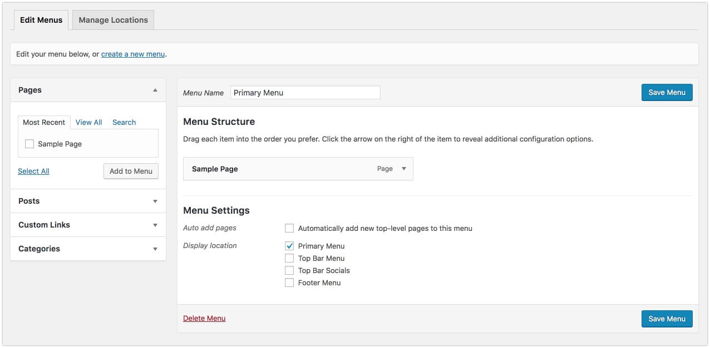
@@name has the following templates built into the theme and can be applied by creating and saving a page in WordPress.
- Default Template (Page with title)
- Custom Page (Page without title)
- Empty Page (Page without Header & Footer)
Keep in mind that we provide lifetime updates and dedicated support in order to have no problems with the new versions of WP. Besides that, @@name offers new features in every new release. So please, stay updated.
FTP
- Download the
@@slug.zip from ThemeForest and unzip it
- Access your server via FTP or SFTP (if you aren’t sure how usually your webhost will have instructions somewhere on their site)
- Browse to
wp-content/themes/
- Delete and override the un-zipped
@@slug folder
Envato Market
Envato released a plugin called Envato Market which can be used to manage all your themes and plugins purchased from ThemeForest and Codecanyon via your WordPress dashboard.
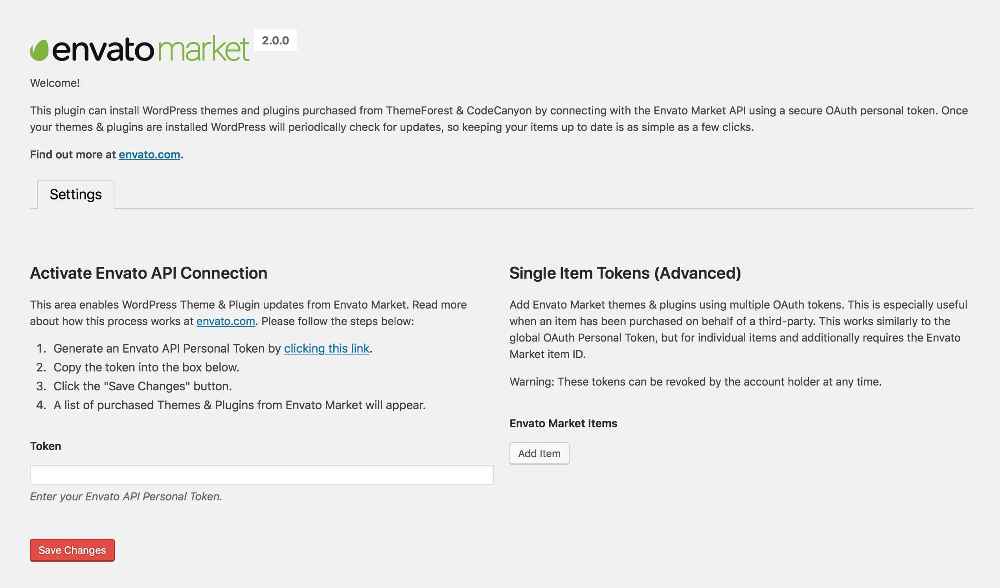
Please note that VLThemes is not responsible for content loss, database errors and such, which may happen to your WordPress install upon an incorrectly applied theme update.
@@name includes some built-in options not only to alter the default look of the text logo, but also to upload your own custom image logo.
Adding A Custom Image Logo
Simply use the Logo field to upload or drag and drop your custom image logo. This logo can be in any format (png or jpg is best) and any size.
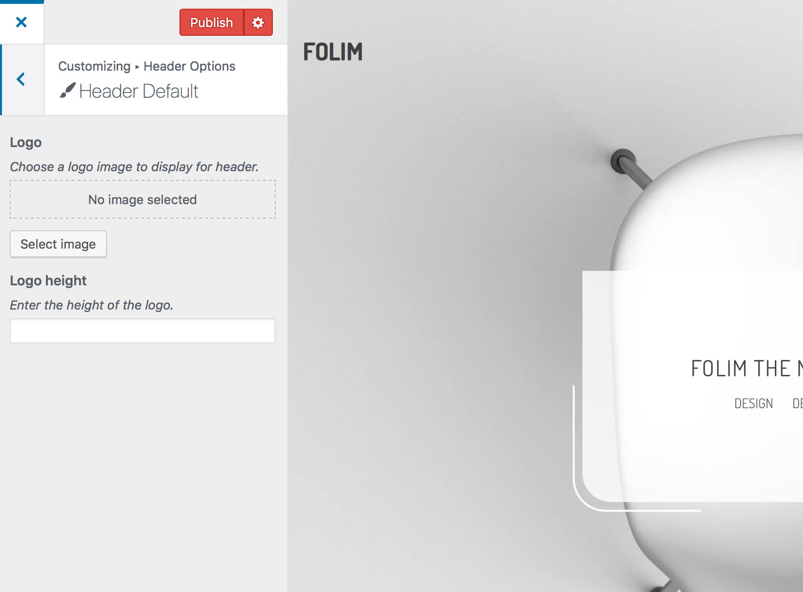
Unlike other themes in @@name your logo doesn’t have a size restriction allowing you to upload any logo image you want and display it in full. However sometimes you may want to upload a large logo and display it at a smaller size you can easily do that via the built-in height settings.
This is a fully customizable font-related panel. You can change the fonts and their style according to your tastes/needs for almost every single individual case. The font-sections are divided in such way, so you can easily find the font you seek to customize.
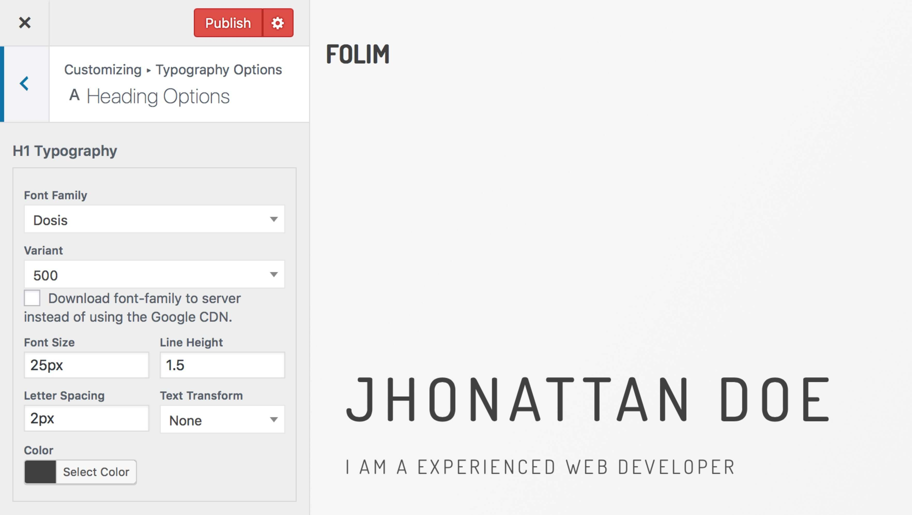
Contact Form 7 is our recommended form plugin for WordPress. It is a simple but powerful form creator for WordPress. Here we will show you how to use Contact Form 7 to create and edit a basic form.
After Contact Form 7 is installed, you will find a new menu item in your WordPress admin area called Contact, here is where your forms and created and edited. From the Contact main screen, you will see your first contact form, it`s usually a default form called Contact Form 1 OR if you have imported the demo data for @@name you may see a few forms that we have made specially for you.
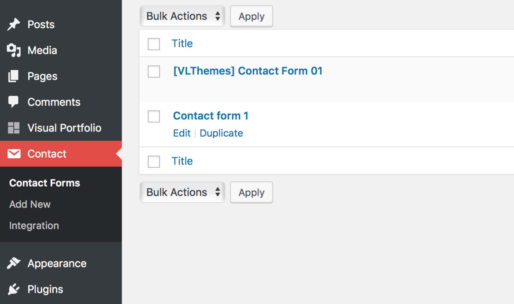
Example Markup
Since WPBkaery Page Builder 4.8 - the process of activating WPB for use on custom post types such as Portfolio has slightly changed.
The area can now be found under the Role Manager Tab within the WPBaerky Page Builder settings area.
Once here, navigate to the Post types dropdown and switch from Pages only to Custom - this will then allow you to check each post type you wish to enable WPB on.
By default WPBakery Page Builder is available for pages only.
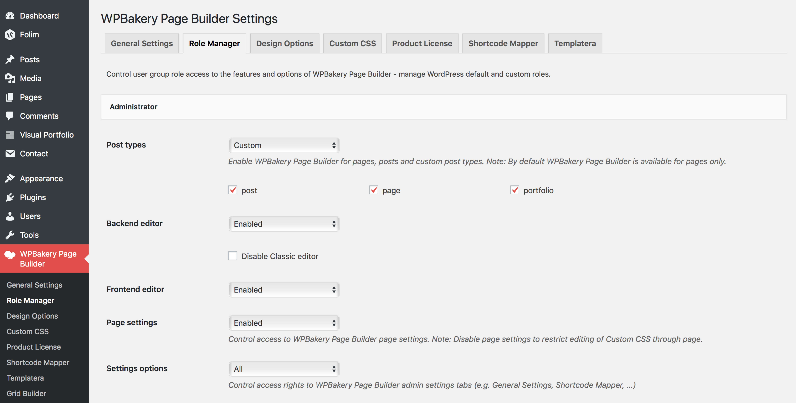

All our Shortcodes are integrated in WPBakery you can find them under VLThemes tab.
Sadly, by default, WordPress has no easy method built into it for taking control of things such as the order of your Posts, categories (Portfolio, Team, Classes etc based on your theme) - Thankfully there is a very handy plugin which can help - Intuitive Custom Post Order
Simply Tick the box next to the content you wish to control and hit save.
Now you can quickly and easily re-order your items by simply dragging them within the WP Dashboard - you can see this wonderful plugin in action below.
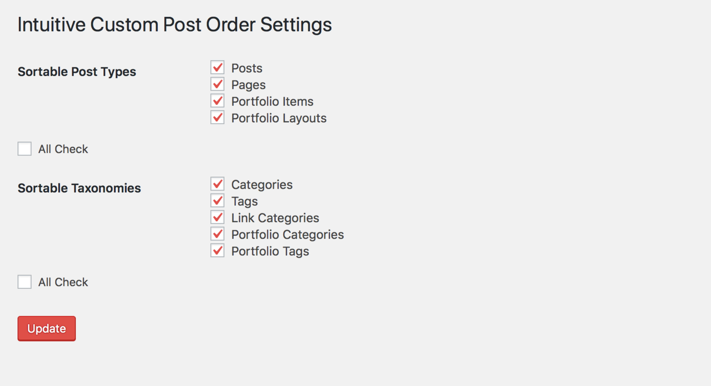
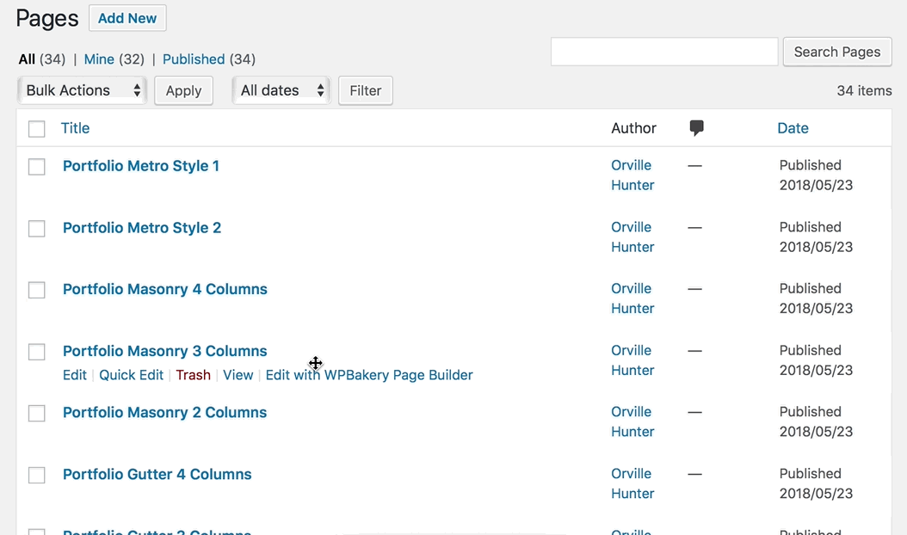
Child themes are separate themes that rely on a parent theme for most of their functionality. If you are using a child theme, WordPress will check your child theme first to see if a specific functionality exists. If it doesn’t, it will use the parent theme. This is great because it allows you to modify only what you need.
Child themes should always be used if you plan on modifying even a single character in your theme.
If you plan to edit the theme files, like style.css, we are suggesting you to install both @@slug.zip and @@slug-child.zip themes, then activate the child theme. Child themes are great because allow you to edit the theme and also lets you update the original theme in the future, without loosing your edited files work.
More about child themes and how to use them you can read here
- Install Loco Translate plugin
- Read more here
You can find .POT file in next folder wp-content/themes/@@slug/languages/